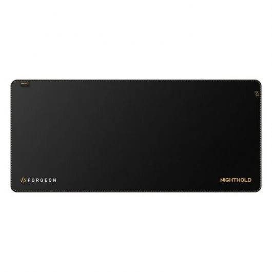
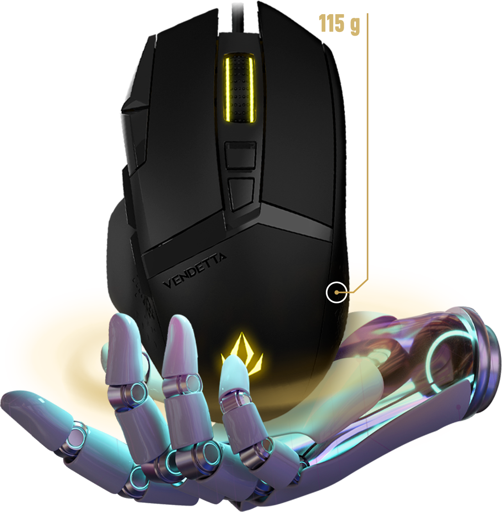
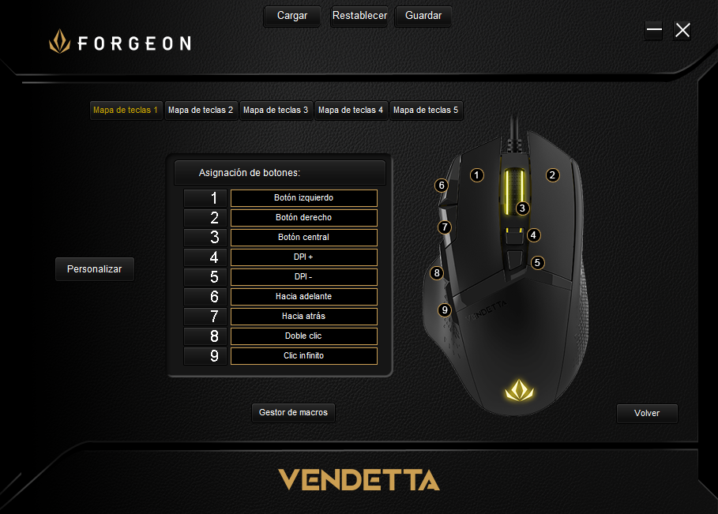

Forgeon Nighthold Cordura  No seleccionar Seleccionar (+29.99€)
 
·Configura varios modos de juego: Su botón inferior central hace que puedas configurar con su programa diferentes configuraciones. Por lo tanto, con cada juego que juegues puedes hacer diferentes configuraciones para que todo esté listo y al alcance de tu mano. Tienes la posibilidad de configurar hasta 5 perfiles de juego y cada perfil con su configuración de botones. Sin duda, una auténtica maravilla. ·Múltiples accesorios: Disfruta de sus múltiples accesorios adicionales. Este pack incluye: cordón, posavasos, bolsa de transporte del producto, juego adicional de almohadillas, pegatinas y demás productos que garantizan tener al completo tu setup gaming disfrutando de las mejores partidas. ·Ergonomía desde el primer momento: Una vez lo pruebes, notarás como tu mano se adapta totalmente a la forma del ratón. La posición de tu mano es totalmente perfecta para que puedas acceder a todos sus botones en milésimas de segundos. También su diseño rugoso por los laterales hace que tu mano no resbale en ningún momento y sobre todo que no tengas fatiga por el sudor indeseado.
·Tamaño del producto: W74 x L129 x H43mm ·Sensor: PMW3389 ·Resolución del sensor: 500-1000-1500- 2000-4000-8000-16000 DPI ·Frecuencia de escaneo: 16000 FPS ·Tasa de sondeo: de 500 a 1000Hz Tipo de LED: RGB ·Interruptor de botón: Omron 20min Codificador: TTC ·Conector: USB 2.0 ·Cable: 1,8 m con filtro de ferrita Accesorios: 1 pieza para cada uno (juego de pegatinas, ·Cordón, posavasos, bolsa de transporte del producto, juego adicional de almohadillas para los pies) ·Fisicas -Modelo FORGEON Vendetta -Dimensiones 74mm x 129mm x 43mm -Peso 115g -Longitud del cable USB 2.0 / 1,8m ·Técnicas -Botones 8 -Pies Pies de PTFE sin aditivos -Sensor Pixart PMW3389 -Interruptores Omron ·Seguimiento y Respuesta -Resolution 500-16.000 DPI -Polling Rate 500-1000 Hz (1ms) -Aceleración máxima: 60G -Velocidad máxima: 400IPS